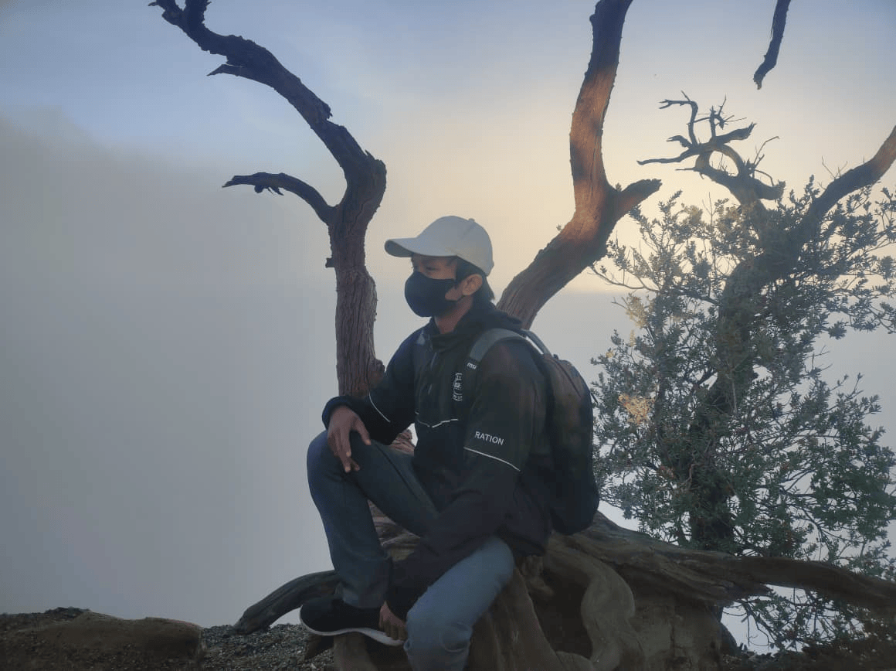

🐍
Python
Dasar pemrograman dan logika program.
Saya tertarik dengan dunia teknologi, terutama web coding, pemrograman, dan desain digital. Saya terus belajar lewat perkuliahan dan proyek kecil untuk mengembangkan kemampuan serta mencoba hal-hal baru.

Perkenalan singkat tentang minat dan hal yang sedang saya pelajari.
Saya adalah mahasiswa S1 Teknik Informatika di Universitas Muhammadiyah Jember. Saya senang mempelajari bagaimana website dirancang, bagaimana program bekerja, dan bagaimana tampilan digital bisa dibuat lebih mudah digunakan.
Saya masih terus mengembangkan kemampuan, jadi saya terbuka untuk belajar dari proyek, pengalaman organisasi, dan kolaborasi dengan orang lain.
Daftar kemampuan yang bisa kamu sesuaikan dengan pengalamanmu.
Dasar pemrograman dan logika program.
Dasar sintaks dan pemrograman berorientasi objek.
Membuat struktur dan tampilan halaman web.
Menambahkan interaksi pada website.
Mempelajari backend untuk web dinamis.
Membuat tabel, relasi, dan query database.
Menyusun halaman web yang rapi dan responsif.
Eksplorasi layout, warna, tipografi, dan UI/UX.
Riwayat pendidikan dari sekolah dasar sampai perguruan tinggi.
S1 Teknik Informatika · Fakultas Teknik
Lulus tahun 2024
Pendidikan menengah pertama
Pendidikan dasar
Pengalaman berorganisasi dan kontribusi dalam kegiatan.
Ketua Bidang Advokasi. Berperan dalam bidang advokasi di Pimpinan Daerah Ikatan Pelajar Muhammadiyah Banyuwangi.
Sekretaris Bidang Perkaderan. Mendukung administrasi dan pelaksanaan program perkaderan di Pimpinan Cabang Ikatan Mahasiswa Muhammadiyah Banyuwangi.
Sesuaikan deskripsi proyek dengan hasil pekerjaanmu yang sebenarnya.
Website untuk mengelola data buku, anggota, dan peminjaman. Sesuaikan deskripsi ini dengan fitur yang sudah dibuat.
Halaman personal untuk memperkenalkan diri, menampilkan skill, dan menyusun pengalaman.
Tambahkan desain poster, UI aplikasi, atau karya visual yang pernah kamu kerjakan.
Terbuka untuk diskusi, belajar bareng, atau kolaborasi proyek sederhana.